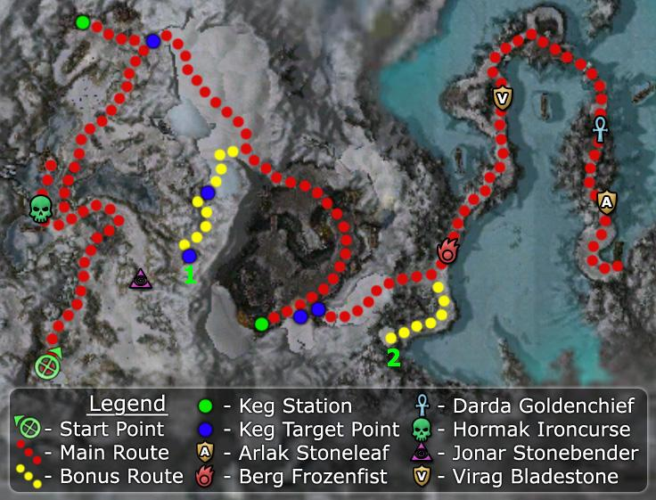

Elite: Cleave
M20
Ice Caves of Sorrow
◉ Mission Map

Click to enlarge · Local cache · Wiki
Summary (click to expand)
Having ascended , and with the truth behind the White Mantle and their Mursaat masters revealed, it is time to strike back. The leaders of the Shining Blade , Evennia and Saidra , have been condemned to death. Break them free of their cell and escape to a boat prepared by your Deldrimor allies.
Region: Southern Shiverpeaks · Mission: 20 of 25 · Type: Cooperative
✓ Objectives
Rescue Evennia [sic]
- Find a way into the holding area.
- Break Evennia out of her cell.
- Escape with Evennia to the awaiting ice ship.
- *BONUS* Return news of Rornak Stonesledge to Hamdor Grandaxe.
→ Walkthrough
The goal of this mission is to rescue Evennia by fighting your way through Stone Summit, White Mantle, and Mursaat forces. Players will encounter the Mursaat and their Jade constructs for the first time here. These creatures use a skill called Spectral Agony which causes massive damage. Their threat can be countered by infusing a character's armor, a feature that becomes available later. In the meantime, use a tank to draw all their attacks away from the rest of the team. Better yet, they all can be avoided excepting one group when doing the bonus.
At the beginning, you will be under siege from the Stone Summit's catapults. The first two are firing from a frozen river. Killing their Engineer will stop their attacks and provide a Morale Boost. Using the firing lever of the second catapult will then trigger an optional cinematic, provoking a Dolyak stampede that destroys the White Mantle's ballistae and kills all of the enemies gathered around them on the other side of the bridge.
Head north, and you will find a closed gate that can be destroyed by dropping a powder keg from the Dwarven Powder Keg Station, clearing a way to the caves. There are four exits: west, south-west, south-east, and east. The second one takes you to the bonus, while the last two continue the mission. Once out of the caves, you will find an open area with Mursaat Elementalists patrolling. The cell holding Evennia and Saidra is located south of this place, with another keg station nearby. Clear the area of hostiles or bypass most of them through a cave on your left, and use another keg to free the Shining Blade allies. Saidra will sacrifice herself to allow the party escape with Evennia. Evennia must survive the rest of the mission. Take another powder keg to destroy the gate and escape to a short cave that leads to the frozen lake.
Once you leave the cave, two large groups of Mursaat Elementalists will start to move towards you together with the intent of chasing you along the winding path across the lake. They move slowly, but you will be hindered along the way by groups of Stone Summit and White Mantle. It is not recommended that you fight the Mursaat, as there are 12 of them and they are powerful spikers even without Spectral Agony. Furthermore, Evennia is not infused, and her death will result in mission failure.
Alternative option 1
As an alternative to fleeing across the lake, you may retreat back into the cave until the Mursaat patrol has moved ahead of the party. They will clear out the Stone Summit foes on the path, but they might stop moving when they reach Darda Goldenchief. If they stop at this boss, they will need to be killed. They can be pulled into separate groups of six Mursaat each, and if you are patient a nearby catapult will thin their numbers. Try to avoid letting Evennia aggro the Mursaat; in particular, the party member whom she is following should not be the one to pull. Regardless, the Mursaat that remain alive will need to be killed, before you reach the boat.
Alternative option 2
A safer alternative is to retreat back to the cave exit until the Mursaat patrol has moved ahead of your party, follow them at a safe distance to avoid combat as they clear out the Stone Summit on the road. The Mursaat will split up at the first fork in the path, half the patrol will head east to engage Virag Bladestone, while the other half goes west, crossing a section of the road under catapult fire. Siege damage won't kill the Mursaat as they keep moving, but you can send in a hero or use a long-range weapon to kite the Mursaat, keeping them in the fire zone so the catapults can quickly finish them off for you. Repeat this process with the remaining Mursaat patrol when they reach the next area under catapult fire. Try to wait until they are well within the fire zone before you pull, if you do it too soon, they will follow you before the catapults can kill them.
Either way, try to avoid letting Evennia aggro the Mursaat; in particular, the party member whom she is following should not be the one to pull if you choose to confront the Mursaat directly. Regardless, the Mursaat that remain alive will stop when they reach Darda Goldenchief and need to be killed, before you board the ship.
Whichever strategy is used, follow the path until you reach the Deldrimor Dwarves' ice ship. The mission completes as soon as Evennia boards.
★ Bonus
The bonus is straightforward: free Rornak Stonesledge (1 on the map) from his prison and carry a verbal message from him to Hamdor Grandaxe (2 on the map). You can initiate the bonus by talking to either NPC first. Also make sure that you blow open the right door, there is a door guarded by Mursaat before the actual door where the Bonus starts. Furthermore there are two main complications:
- You need two extra powder kegs to blast your way open, which is tedious for single-player teams. (Even with an individual speed boost, this takes an extra minute or three.)
- The bonus route requires dealing with Jade Constructs (near Rornak's cell) and Mursaat Elementalists (in front of Hamdor's cave): their Spectral Agony can quickly kill unprotected characters (characters without infused armor). Therefore it is wise to send in a Hero to tank the spectral agony for you since they take the damage as if they were infused.
The first group of constructs blocking the route to Rornak must be dealt with. There are several approaches for a single player, none of which are entirely reliable for characters tackling Prophecies for the first time:
- Go directly into the fight and be willing to absorb a few deaths on the team. (You can recharge resurrection signets by killing the last remaining Stone Summit Engineer.)
- Use a party member to tank the constructs; with enough healing, they can survive Spectral Agony's direct damage and health degeneration.
- Carefully pull the constructs away from each other and spike one at a time. With enough damage, you can take down one of the constructs and (if needed) retreat to heal before returning for the others.
- If you have heroes and/or animal companions, use them to defeat the constructs, since their armor is always infused.
For the bonus, the second group of Mursaat Elementalist can be easily avoided by briefly stepping out of the cave to Hamdor's west, retreating south, and then waiting for the Mursaat to pass by; this leaves the route to Hamdor free of enemies and letting you complete the bonus objective without more complications. If you still need to complete the main mission, The Mursaat Elementalist must be dealt with. To do so, consider the following:
- Make use of the Stone Summit catapults to get the Mursaat killed without direct confrontation, as detailed previously.
- If you rather face the mursaat, keep in mind they will split up into two groups shortly after the first battle between White Mantle and Stone Summit, around the large rock where Virag Bladestone guards one route and a catapult guards the other. The group facing Virag will most likely waste the initial cast of their dangerous Thunderclap but are unlikely to take much damage before the battle, while the catapult group will end up softened by the raining projectiles but will have all their skills ready
Reaching Rornak is the only section of the mission that requires exposing you to Spectral Agony. If none of the above strategies work for you to overcome that part of the mission, you can finish the main quest and return for the bonus after getting your armor infused during the next mission.
◆ Hard Mode
During Saidra and Evennia's rescue, blast the back gate before breaking their cell; the cave can provide a safe place for your party if it has not been cleared yet. Also, if you are struggling to keep Evennia alive at the frozen lake, you can clear the path including the Mursaat Elementalists before freeing her from her cell. This method only adds a few minutes to the mission time, but more or less guarantees Evennia's survival.
☠ Bosses & Elites
Elite: Cleave
Elite: Mark of Protection
Elite: Offering of Blood
Elite: Crippling Anguish
Elite: Water Trident
✦ Tips & Notes
Skill recommendations
- Anti-caster skills to counter Mursaat Elementalists.
- Interrupts, especially to stop Spectral Agony.
- Minions and Spirits ease battles versus two or more groups.
Notes
- You cannot save Saidra; if you manage to kill off her attackers, she will run off and disappear.
- You can infuse your armor even before this mission by trekking up to Mineral Springs and killing the Ice Beast, then giving the Spectral Essence it drops to the Seer immediately south of it.
- This mission adds approximately 1.1% to the Tyrian Cartographer title track.
- Non-human heroes will not bow during the final cinematic; they apparently lack the animation.
- When reaching Rornak, for the bonus, there are two gates leading off from the caves: if you try to blow up the wrong one, it won’t be destroyed and may appear to be bugged. Double-check the map: the gate you are trying to blow up is in the southern blue patch of the mountain and should turn a corner off the main path before the gate.
- When letting the Mursaat go in front of your party at the frozen lake, you have to stay in compass range of them if you want them to clear the Stone Summit along the path for you.
- Completion of this mission will fill in page #13 of The Flameseeker Prophecies storybook.
- After completing this mission, your party appears in Iron Mines of Moladune.